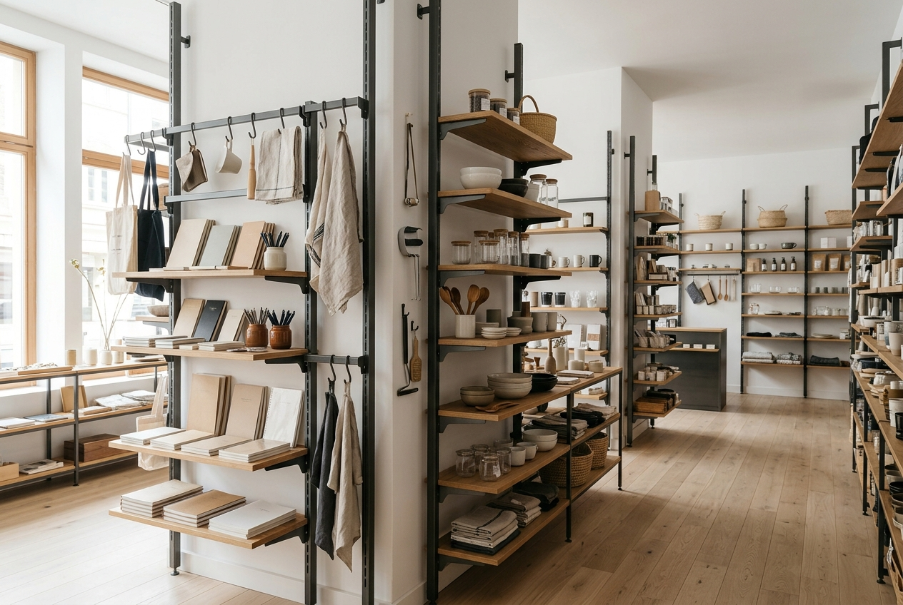
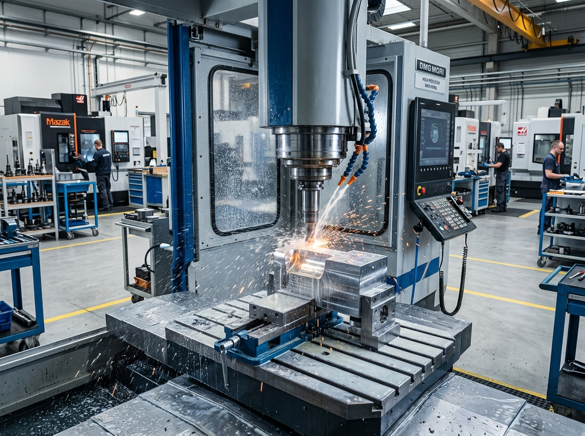

結構鋼材與精密鋁合金
提供重載垂直抗彎剛性、防晃抗傾覆基底、隱藏式強弱電走線導槽，以及 0.5mm 納まり極限隱藏式插件結構。
ENGINEERING & FABRICATION GUIDE
掌握頂級商業陳列中跨材質的結構承重力學、熱脹冷縮釋放、色彩質感均勻度，以及全球外銷平整化拆裝（KD）的工程關鍵。
現代精品專櫃、旗艦展廳與美妝中島已不再滿足於單一冰冷的金屬或厚重的純木作。頂尖品牌期望融合天然實木的溫潤觸感、結構鋼材的纖細極限線條，以及光學級壓克力的輕盈懸浮感。
提供重載垂直抗彎剛性、防晃抗傾覆基底、隱藏式強弱電走線導槽，以及 0.5mm 納まり極限隱藏式插件結構。
在顧客接觸最頻繁的檯面、底座與收納抽屜部位，營造品牌溫暖自然的觸覺記憶與高端居家質感。
提供宛如玻璃般的無瑕懸浮展托與 LED 側發光導光效果，且完全避免了重型鋼化玻璃的笨重與碎裂風險。

金屬骨架尺寸終年恆定，而實木板材隨環境濕度伸縮，壓克力則隨溫度膨脹。Big Fame 預先在金屬固定孔位設計長條形浮動間隙與微發泡彈性減震墊，確保多年商轉絕不起拱開裂。

若將金屬與木作發包給不同廠商，1mm 的公差累計將演變成現場安裝災難。我們在廠內由單一技術團隊統籌 3D CAD 數位總成圖，在雷射切割與 CNC 銑削前嚴格校對所有孔距中心線。
整組組裝完成的商用中島進行跨國海空運，不僅材積運費驚人，運送碰撞受損率更極高。我們透過精密 KD 結構，在不犧牲視覺高級感的前提下實現極致扁平化。
精密偏心輪鎖、內六角卡扣與微型吊掛榫接，杜絕螺絲頭外露，店面人員僅需一把內六角板手即可直覺完成組裝。
金屬骨架插接巢狀堆疊、板材緊密貼合裝箱，極大化貨櫃與空運載重密度，大幅壓低門市落地成本。
每批出貨隨附 3D 爆炸圖說明書，所有零件袋按步驟標記編號，使各國門市的視覺陳列員與店員皆能輕鬆安裝。
我們在同一套 3D 總成圖面下協調製作，並於金屬固定耳板預留 0.5~1.0mm 的長條形膨脹浮動孔（Expansion Slotted Holes）與減震彈性墊片，確保實木遇潮熱伸縮時絕不致使面板起拱或破裂。
可以。我們依據國際標準 Pantone 或 RAL 色票，協調鋼構靜電微砂粉體烤漆、木質聚氨酯色漆噴塗，以及壓克力 UV 絲印，在工廠打樣階段完成跨材質同光源校色核可。
我們採用隱藏式偏心輪凸輪鎖扣（Cam-lock）、內六角精密隱藏扣件與掛入式榫接結構，消除外露螺絲，並將所有構件設計為可完全扁平疊放的 KD 包裝模組。
歡迎提供金屬、木作或壓克力複合設計草圖。24 小時內工程師提供公差接合建議與打樣評估。
包含 0.5mm 陰影縫公差標準、金屬與木作隱藏扣件規格庫，以及 KD 外銷裝箱材積精算資料。